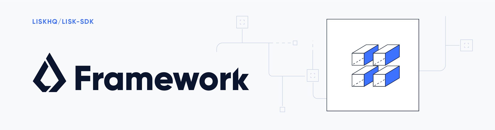

Framework class interfaces

Table of Contents
Application
Interface of the Application class
interface Application {
registerModule: (moduleClass: typeof BaseModule) => void; (1)
registerPlugin: (pluginClass: typeof BasePlugin) => void; (2)
run: () => Promise<void>(3)
shutdown: (errorCode: number, message: string) => Promise<void> (4)
networkIdentifier: Buffer; (5)
getSchema: () => { (6)
account: Schema;
Block: Schema;
blockHeader: Schema;
blockHeaderAssets: { [blockVersion: number]: Schema };
transaction: Schema;
transactionsAssets: {
moduleID: number;
moduleName: string;
assetID: number;
assetName: string;
schema: Schema;
}
}
}| 1 | Adds a module to the application. |
| 2 | Adds a plugin to the application. |
| 3 | Starts the application. |
| 4 | Shutdown stops the application with a given code and message. |
| 5 | NetworkIdentifer used to sign block and transactions. |
| 6 | getSchema returns all schema definitions that are registered to the application. Schema is a type defined by codec, which is a Klayr JSON schema. |
The BaseModule
Interface of the BaseModule
import {
GenesisConfig,
AccountSchema,
TransactionApplyContext,
AfterBlockApplyContext,
BeforeBlockApplyContext,
AfterGenesisBlockApplyContext,
Reducers,
Actions,
BaseModuleDataAccess,
} from '../types';
import { BaseAsset } from './base_asset';
interface Channel {
publish(name: string, data?: object): void;
}
export abstract class BaseModule {
public abstract name: string; (1)
public abstract id: number; (2)
public transactionAssets: BaseAsset[] = []; (3)
public accountSchema?: AccountSchema; (4)
public actions: Actions = {}; (5)
public events: string[] = []; (6)
public reducers: Reducers = {}; (7)
public readonly config: GenesisConfig;
protected _channel!: Channel;
protected _dataAccess!: BaseModuleDataAccess;
public constructor(genesisConfig: GenesisConfig) {
this.config = genesisConfig;
}
public init(input: { channel: Channel; dataAccess: BaseModuleDataAccess }): void {
this._channel = input.channel;
this._dataAccess = input.dataAccess;
}
public async beforeTransactionApply?(context: TransactionApplyContext): Promise<void>(8)
public async afterTransactionApply?(context: TransactionApplyContext): Promise<void>(9)
public async afterGenesisBlockApply?(context: AfterGenesisBlockApplyContext): Promise<void>(10)
public async beforeBlockApply?(context: BeforeBlockApplyContext): Promise<void>(11)
public async afterBlockApply?(context: AfterBlockApplyContext): Promise<void>(12)
}| 1 | Required. Name of the module. |
| 2 | Required. Module ID. |
| 3 | Optional. List of transaction assets for this module. |
| 4 | Optional. Schema of account asset to be used in this module. |
| 5 | Optional. A set of actions which can be called from plugins and external services. |
| 6 | Optional. A set of events name that will be emitted from this module, which can be subscribed by plugins and external sevices. |
| 7 | Optional. A set of actions which can be called from other modules during the block processing. |
| 8 | Optional. A function which will be called for all transactions before the apply function of the transaction. |
| 9 | Optional. A function which will be called for all transactions after the apply function of the transaction. |
| 10 | Optional. A function which will be called while applying the genesis block. |
| 11 | Optional. A function which will be called before a block is applied. |
| 12 | Optional. A function which will be called after a block is applied. |
The BaseAsset
Interface of the BaseAsset
class BaseAsset<K> {
public name: string; (1)
public id: number; (2)
public schema: Schema; (3)
public apply: ({senderID:Buffer, asset: K, stateStore: StateStore, transaction: Transaction }) => void; (4)
public validate?: (asset: K) => void; (5)
}| 1 | Name of the asset which will be used in the UI. |
| 2 | Type of the asset which will be used in the transaction. |
| 3 | Schema of the content of this asset. |
| 4 | Optional. Apply. |
| 5 | Optional. Validation function that can be implemented if additional. |
The BasePlugin
Interface of the BasePlugin
class BasePlugin {
static get alias(): string; (1)
static get info(): { (2)
author: string,
version: string,
name: string,
};
get defaults(): Record<string, unknown>(3)
get events(): string[]; (4)
get actions(): { [actionName: string]: actionHandler }; (5)
async load(channel): Promise<void>(6)
async unload(): Promise<void>(7)
};| 1 | A unique plugin identifier, that can be accessed throughout the system. If any plugins are already registered with the same alias, then an error will be thrown. |
| 2 | Package meta information. |
| 3 | Supported configurations for the plugin with default values. |
| 4 | List of valid events which this plugin wants to register with the controller.
Each event name will be prefixed by the plugin alias, e.g. pluginName:event1.
Listing an event means to register the event in the application.
Any plugin can subscribe or publish that event in the application. |
| 5 | Object of valid actions which this plugin wants to register with the controller.
Each action name will be prefixed by the plugin alias, e.g. pluginName:action1.
The source plugin can define the action while others can invoke that action. |
| 6 | Method which will be invoked by the controller to load the plugin.
Ensure all loading logic gets completed during the life cycle of load.
The controller emits an event app:ready which you can use to perform certain activities, which you may wish to perform when all other plugins are loaded. |
| 7 | Method to be invoked by the controller to perform the cleanup. |